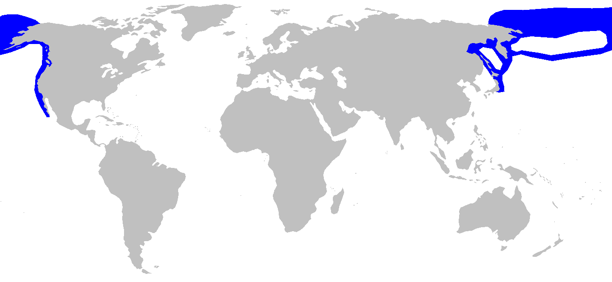
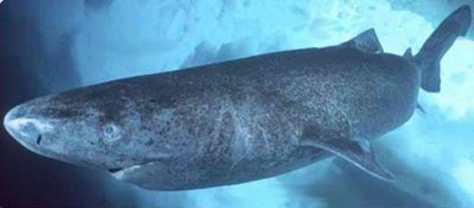
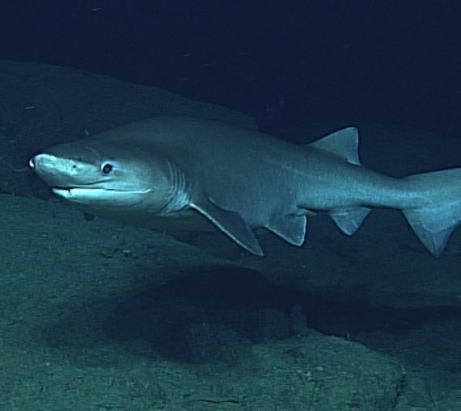
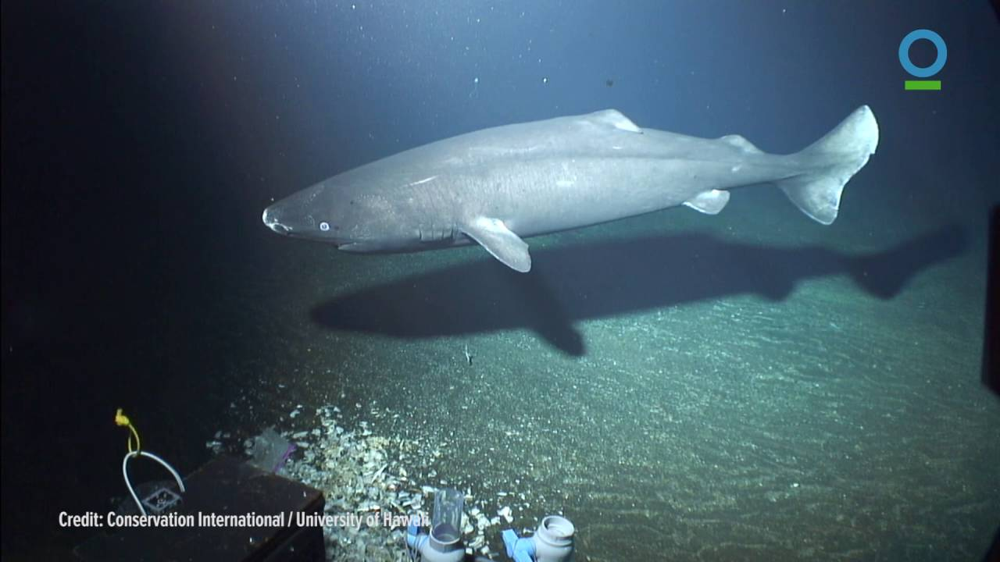
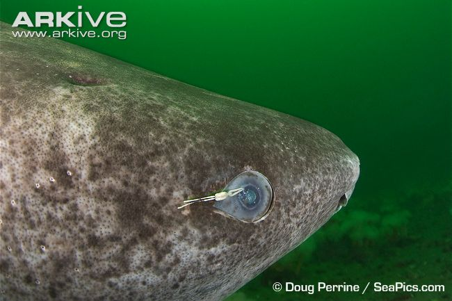

Pacific Sleeper Shark

The Pacific sleeper shark (Somniosus pacificus) is a sleeper shark of the family Somniosidae, found in the North Pacific on continental shelves and slopes in Arctic and temperate waters between latitudes 70°N and 22°N, from the surface to 2,000 metres (6,600 ft) deep. Records from southern oceans are likely misidentifications of relatives. Its length is up to 4.4 m (14 ft), although it could possibly reach lengths in excess of 7 m (23 ft).
Feeding Habits
Pacific sleeper sharks, which are thought to be both predators and scavengers, can glide through the water with little body movement and little hydrodynamic noise, making them successful stealth predators. They feed by means of suction and cutting of their prey. They have large mouths that can inhale prey and their teeth cut up any pieces that are too large to swallow. They show a characteristic rolling motion of the head when feeding. Only in Alaska has the shark's diet been studied - most sharks' stomachs contain remains of giant Pacific octopus. They are also known to feed on bottom-dwelling teleost fishes, as well as soles, flounders, Alaska pollock, rockfishes, shrimps, hermit crabs, and even marine snails. Larger Pacific sleeper sharks are also found to feed on fast-swimming prey such as squids, Pacific salmon, and harbor porpoises. The diet of the Pacific sleeper shark seems to broaden as they increase in size. For example, a 3.7-m female shark found off Trinidad, California was found to have fed mostly on giant squid. Sleeper sharks found in Alaskan waters from 2 to 3 m (6.6 to 9.8 ft) seem to feed mostly on flounder, pollock, and cephalopods, while sleeper sharks 3.3 to 4.25 m (10.8 to 13.9 ft) long seem to consume teleosts and cephalopods, as well as marine mammals. A recent study in the Gulf of Alaska suggests that sleeper sharks may prey on juvenile Steller sea lions.
Reproduction
Very little is known about the early life of Pacific sleeper sharks. They are believed to produce eggs that hatch inside the female's body (reproduction is ovoviviparous), but gestation time is unknown and litter sizes are thought to be about 10 pups. Its length at birth is about 42 cm (1.38 ft) or less.
Size
The average mature size is 3.65 m (12.0 ft) and 318–363 kg (701–800 lb). The largest Pacific sleeper shark verified in size measured 4.4 m (14 ft) long and weighed 888 kg (1,958 lb), although it could possibly reach 7 m (23 ft) or more. In 1989, an enormous Pacific sleeper shark was attracted to a bait in deep water outside Tokyo Bay, Japan and filmed. The shark was estimated by Eugenie Clark to be about 7 m (23 ft) long.
Adaptations
Due to living in frigid depths, the sleeper shark's liver oil does not contain squalene, which would solidify into a dense, nonbuoyant mass. Instead, the low-density compounds in the sharks' liver are diacylglyceryl ethers and triacylglycerol, which maintain their fluidity even at the lowest temperatures. Also, they store very little urea in their skin (like many deep sea sharks), but like other elasmobranchs, have high concentrations of urea and trimethylamine oxide (nitrogenous waste products) in their tissues as osmoprotectants and to increase their buoyancy. Trimethylamine oxide also serves to counteract the protein-destabilizing tendencies of urea and pressure. Its presence in the tissues of both elasmobranch and teleost fish has been found to increase with depth.
Because food is relatively scarce on the deep sea floor, the sleeper shark is able to store food in its capacious stomach. The sleeper shark's jaws are able to produce a powerful bite due to their short and transverse shape. The upper jaw teeth of the sleeper shark are spike-like, while the lower jaw teeth are oblique cusps and overlapping bases. This arrangement allows grasping and sawing of food too large to swallow. Pacific sleeper sharks have a short caudal fin, which allows them to store energy for fast and violent bursts of energy to catch prey.
In 2015, a pacific sleeper shark was filmed near the Solomon islands underneath an active volcano. The shark is able to survive in water with a high temperature and acidity.
Known Predators
Sleeper sharks are preyed on by the offshore ecotype of killer whales off British Columbia. In addition, like the Greenland shark, the parasitic copepod Ommatokoita elongata can often be observed consuming the shark's corneal tissue.